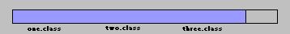
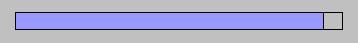

Progress Bar Implementation Details.
Length of the progress bar is considered to be 100% of all the download work that plug-in has to do before it can start an applet. Consider the following example:
Applet Example1 is stored in three JAR files. Size of each jar file does not matter. We divide progress bar into three equal parts, each part represent a single JAR file. When plug-in starts downloading first JAR file, its size becomes known. (Requesting the size of the JAR file prior to the moment we start downloading takes too much time and it was decided not to perform this expensive procedure.)
First third of the progress bar is considered to be 100% of work to be done to download first JAR file. This is the view of the progress bar after finishing the download of the first out of three JAR files:

When plug-in determines that first JAR file does not contain all the information needed to start applet, it starts downloading second JAR file. There is a bit of a delay between end of download of the first JAR file and beginning of the download of the second JAR file, which is directly connected to the network speed and time it takes to open a connection and start downloading second JAR file.
Let's assume that when two out of three JAR files of applet Example1 downloaded, applet started. It takes several seconds for an applet to start, during that time the progress bar will look like this:
When all classes loaded,
applet will start.
All of the above is applicable to cases when applets are packaged in a JAR file(s). If applet is not in a JAR file, we display progress in progress bar in the following manner:
Progress bar is considered to be 100% of work. We do not know how many .class, .gif, .wav, etc. files we need to download. Assuming that it is not too many, since if there are a lot of single files they should be packaged in a single JAR file to save time on opening each connection, every time we download a file, we assume that it is half of all work that has to be done.
Applet Example2 is not packaged in a JAR file and has one.class, two.class, three.class and four.class files to download. Plug-in is not aware of the number of classes it needs to download. When Plug-in starts downloading one.class, it divides progress bar in half and considers first half of the progress bar to be 100% of one.class size. As we make progress downloading one.class, we update certain portions of first half of the progress bar. This is how progress bar looks when done downloading one.class:

When Plug-in starts downloading two.class, it takes remaining (second) half of the progress bar and divides it in two halves, and considers first half (which is actually a third quarter of the original progress bar) to be 100% of two.class size. We update the part of the progress bar that corresponds to the two.class as we download it. This is how the progress bar looks when done downloading two.class:

At this point we have downloaded one.class, two.class and have to download three.class and four.class. Fourth quarter of the progress bar is again divided into two halves and first half is considered to be 100% of three.class size. Plug-in does not know how many more files it has to download. This is the progress bar after we done downloading three.class:

The last part of the progress bar gets divided into two halves again, and the first half is considered to be 100% of four.class size. It gets updated and repainted as we progress with download.
At the very end, when all classes are downloaded, a very little part of the progress bar will not be painted. This is how the progress bar will look after all classes/files are downloaded:

The size of that last, unpainted part will depend on the number of files applet needs to download. The more files it needs, the less of a blank space will be left.
This representation of
a progress is somewhat artificial, but it shows to user that something
is happening and applet is not hung. Also, keep in mind that single class
files load fast and should not be large. It seems to be important to show
progress in either case - if we have JAR files or if we don't have them
- to make plug-in appearance/behavior consistent.
Color tags
There are two HTML tags to specify background color for the gray box and foreground color for the gray box.
BOXBGCOLOR tag in HTML page to specify a background color for the applet's gray (not necessarily from now on) box. This parameter can have two formats:
BOXBGCOLOR = "cyan"
- specify any existing background color from java.awt.Color
BOXBGCOLOR = "111, 222,
145"
- specify color in RGB format to satisfy Color(int r, int g, int b).
- if user missed one of three parameters (or misspelled the existing awt
color), we print a Trace message to the Java Console indicating that they
missed one or more of the colors in the BOXBGCOLOR html tag and use light
gray (default) as a background color for the applet's box.
BOXFGCOLOR is the html tag for foreground color. Same
format(s) as for background color.
- if user missed one of three parameters (or misspelled the existing awt
color), we print a Trace message to the Java Console indicating that they
missed one or more of the color components in the BOXFGCOLR html tag, and
use black (default) as a foreground color for the applet's box.
PROGRESSCOLOR is the html tag for the color of the progress bar
(filling). Same format(s) as for back/foreground color tags.
- if user missed one of three parameters (or misspelled the existing awt
color), we print a Trace message to the Java Console indicating that they
missed one or more of the color components in the PROGRESSCOLOR html
tag, and use purple (default) as a color for the progress bar.
BOXMESSAGE is the html tag to provide a message for the applet
viewer instead of plug-in messages.
If user specifies
BOXMESSAGE=""
(open quotes, close quotes, nothing in the quotes), the messages in
the gray box will be turned off. There will be only progress bar
and nothing else in the gray box.